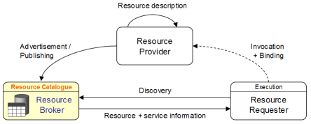
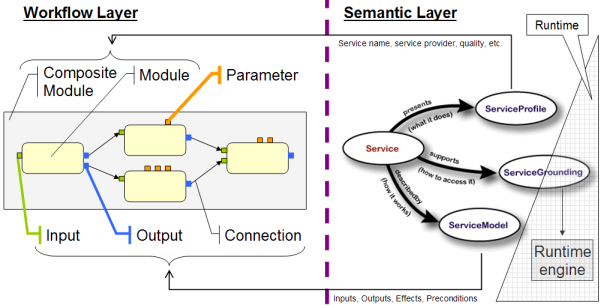

|
|
| How to work with HAMMER |

| |
General approach ->
Details and insights ->
Instructions ->
The semantic workflow framework enables semi-automated discovery (matching), composition, and execution of workflows, and it promotes complex user interactions based on scientific workflows. This framework is based on an Service Oriented Architecture (see Figure A)

Figure A. Operations and actors involved in a Service Oriented Architecture
In the VL-e project, this architecture is semantically enhanced by using a two-folded approach: first, to semantically annotate the workflow and its services, and second, to employ an ontology-based matching mechanism to locate available workflows.
Our suggestion is not to reinvent the wheel or design a complete semantic framework from scratch, rather it looks at integration of already applied research. As such, we opted to follow the Semantic Markup for Web Services (OWL-S) to semantically annotate WS-VLAM workflows and to extend an already defined matching process for workflow discovery. Our description of workflows have two layers: a workflow layer, represented by the WS-VLAM elements, and a semantic layer, represented by the proposed annotation and the corresponding ontologies (see Figure B).

Figure B. Layers of workflow descriptions.
OWL-S supports the definition of services and workflows, by describing their structure, semantic, and behavior (abstract or concrete). Using the non-functional descriptions of the service profile and the functional inputs, outputs, and parameters of the service model, we can establish the semantics of WS-VLAM definitions. The Semantic Annotation of Workflows (SAW) tool is being currently de veloped as part of the Workflow Composer for this task. Once the workflows have been annotated, a generic workflow matchmaker can retrieve the descriptions and perform profile-based input and output matching. The matching algorithm may combine logic-based semantic matching with syntactic token-based similarity metrics.
T.B.E.
Explain form, configuration, etc.
Kruislaan 403
1098 SJ, Amsterdam